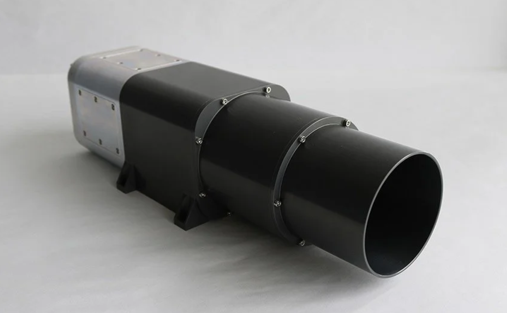
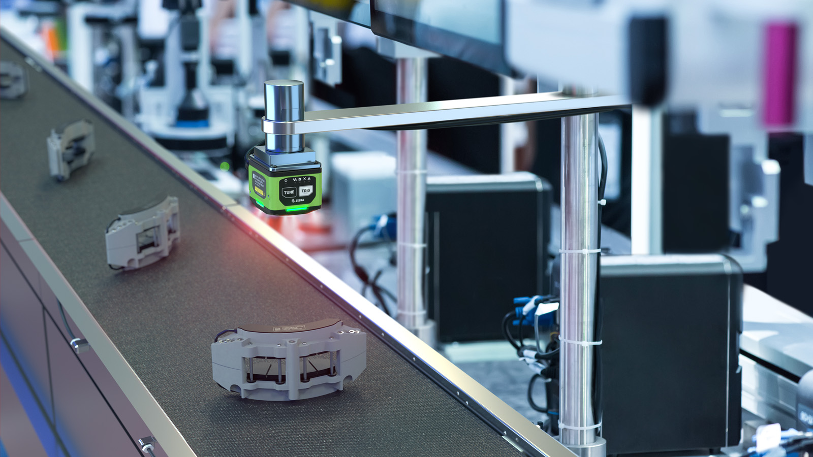
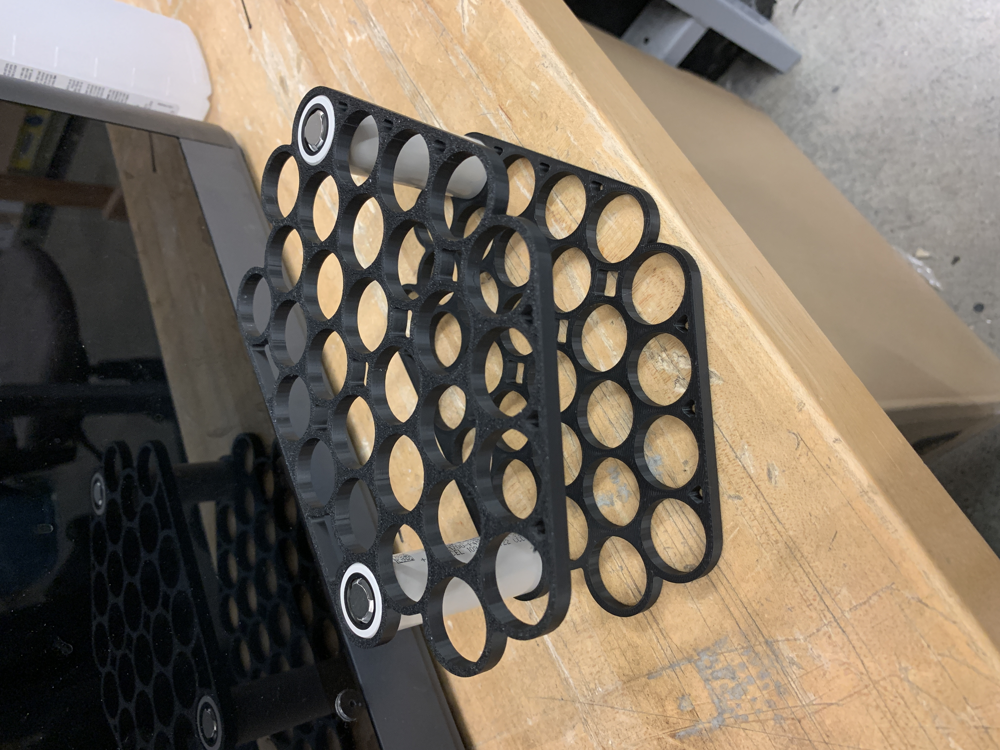
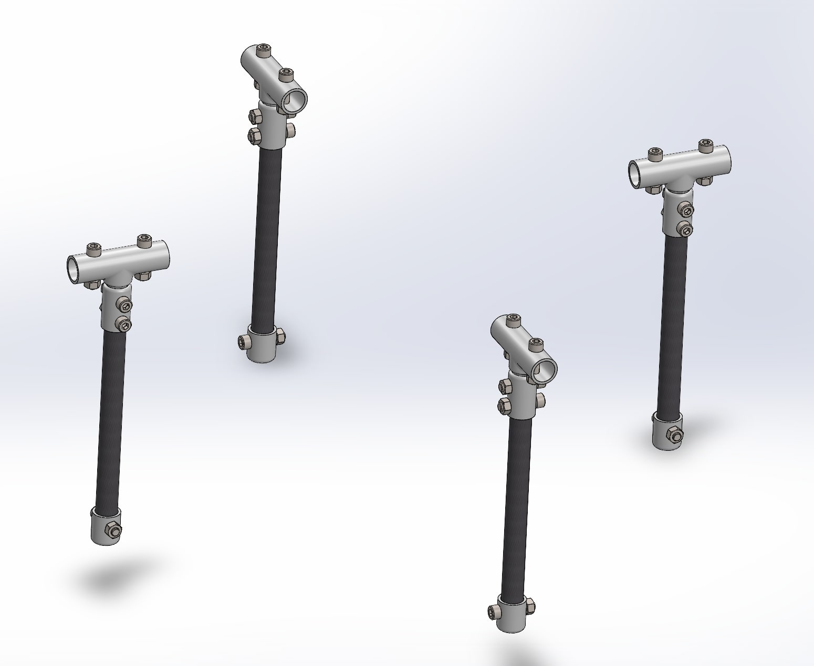
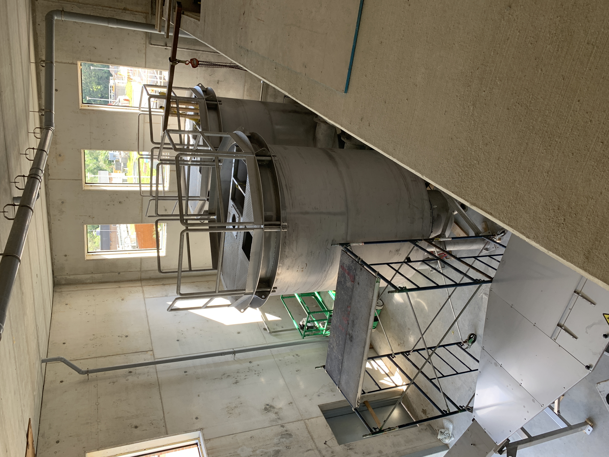
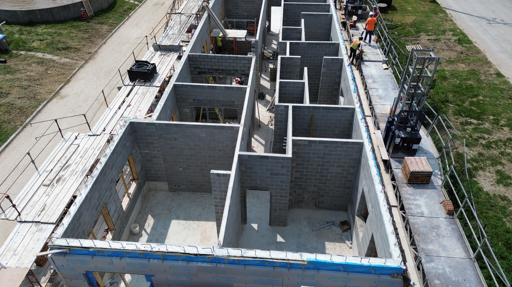
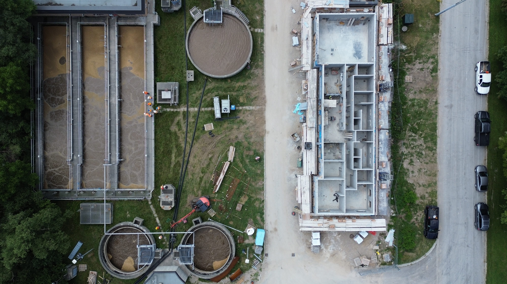

QEYnet Inc
Engineering Intern
- Calculated and simulated various aspects of an uplink optical laser signal to determine optimal wavelength and power for guidance laser transmission to a satellite in order to increase pointing accuracy of satellite from 0.2 to 0.04 degrees
- Modelled atmospheric light transmission in WSL using various software packages, and performed radiometry calculations to determine background noise based on NASA satellite data of earth at night
- Utilized Fortran model to quantify refraction of quantum signal and guidance laser through earth's atmosphere
- Provided thorough calculations in documents, python scripts, and spreadsheets to support use of a laser and corresponding filter that would achieve 1000:1 signal-to-noise ratio with the specified image sensor
- Performed work in optical lab, including testing and characterizing quarter wave plates and non-polarizing beam splitters for use in future quantum key distribution systems
- Performed a safety analysis on the laser guidance system to ensure compliance with local regulations

ATS Corporation
Vision Designer Co-op
- Performed statistical analysis on blob parameters from thousands of images and developed complex machine vision code for part inspection in pharmaceutical device production line, using an algorithm that assigned weights to parameters depending on their location in the image, increasing accuracy from 90% to 99.98%
- Trained, deployed, and tested edge-learning and deep neural net tools on a production line, and summarized results, which proved the necessity of an optical redesign, and later presented to vision department about usage of AI tools within vision engineering
- Developed and tested major optical modification involving additional cameras and different lighting, leading to approval from upper management for a $50,000 redesign that would decrease inspection error from 100 parts per million to 3 parts per million and vastly increase robustness and reliability
- Developed, modified, and tested vision solutions for seven different camera inspections on a critical 320 parts-per-minute production line with 7 other lines depending on it, resulting in accurate inspections that met rigid customer requirements

Waterloo Aerial Robotics Group
Mechanical Lead
Mechanical Project Manager
- Managed design of key drone components including dual-axis camera gimbal, landing gear, and various electronics cases
- Designed casing for custom lithium ion battery pack
- Vacuum infused carbon fibre panels for frame of 14 kg drone
Mechanical Team Member
- Designed drone casing for various PCBs and landing gear in Solidworks
- Machined and assembled fuselage and wings for fixed-wing airplane by milling aluminum, laser cutting wooden ribs, and applying ultracote for light wing skin
- Performed wet carbon fibre layup for drone side panels
- Designed IR camera and Raspberry Pi mount for existing frame, with rubber grommets to be friction fit onto drone
- Aided in assembly of 3.8 kg fixed wing plane by wrapping wings in ultracote, modifying landing gear, and harnessing electronics






H2Ontario - General Contractor
Laborer
- General work at Pumping Station in Waterloo, Wastewater Treatment Plant in St Marys, and Water Treatment Plant in Port Dover
- Fused HDPE pipe system over 200 ft long, providing temporary bypass of plant's headworks building and aided in construction of steel piping system for flocculation tanks
- Used Leica Total Station to layout road marks, curbs, hydro, and building components, as well as estimate volumes of dirt piles
- Used drone for site photography and to get images of rooftop layouts
- Filled air filter tank with 93 000 kg of media, worked on PVC pipe humidifier system for filter





